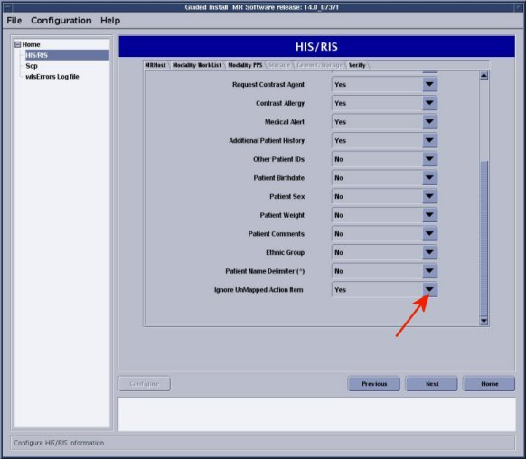

Operating Documentation
Direction 5133315-3, Rev# 14
Module Version 3.0, Version Date 3/23/09
Operating Documentation |
To verify connectivity to the RIS system, access the Scan desktop and select [New Pt].
Click [Schedule] on the Patient Information screen. (See Illustration 1.)
Notice that the Worklist screen shown in Illustration 2 will display.
Click [Preferences], and the Query Preferences screen shown in Illustration 3 will open.
On the Query Preferences screen, control how the information is pulled from the RIS system by selecting the appropriate Get Patient list for: option(s):
After entering the appropriate preferences, click [Accept].
Select [Update] on the Worklist GUI. A pop-up will display with the message, Update in progress. If the patient information displays as shown in Illustration 4, communication exists between the system and RIS system. If a pop-up displays with the message, Cannot update, Network Error, proceed to Troubleshooting,Troubleshooting.
Access the Common Service Desktop (CSD), select [Config] and [Guided Install].
Select [HIS/RIS] under the Guided Install tab, and Click here to start this tool. No password is needed.
When the GUI shown in Illustration 5 displays, select HIS/RIS, and the MR Host tab located on the upper left of the GUI.
Verify that the Hospital Name, Suite ID, Host ID and Local AE Title are correct for the MR system. The Local Port Number should be set to 4006 (same as the DICOM networking Port Number for MR systems). These are the parameters the hospital RIS system will use to identify the GE Healthcare system.
Select the Modality Worklist tab shown in Illustration 6.
Verify the following information with the site Network Administrator:
Select the Modality PPS tab shown in Illustration 7.
Verify the following information is correct for the RIS system with the site Network Administrator:
Select the Verification tab shown in Illustration 8. This tab may identify problems with the configuration. The example in Illustration 8 indicates a failure with the Local IP Address, such as a comma rather than a period in the address.
Check the error log associated with the RIS system:
For MR Signa 9.1 Modality Worklist Required Fields as of 10/05/2004, see Illustration 10.
For MR Signa 11.0 Modality Worklist Required Fields as of 10/05/2004, see Illustration 11.
For the MR Signa 12.0 Modality Worklist, see Illustration 12.
To remove the Performed Procedure Step (PPS) option key:
Perform SaveInfo.
Access the Option Key list under Guided Install, select PPS and click on [Uninstall].
On the SCP tab (accessed on Guided Install screen), an action item can be mapped to a protocol so when the record with that action item is loaded from the Worklist browser, the mapped protocol is automatically loaded. When not all action items of a worklist record get mapped to protocols (called partial mapping) or no action items are mapped to protocols, a Skipped Action Items, Please Configure pop-up displays on the scan desktop when such a worklist record is selected and loaded. The Ignore Unmapped Action Item field under the HIS/RIS option can be toggled to either Yes or No.
When set to Yes, the pop-up does not display when no action items are mapped to protocols.
When set to No, the pop-up displays when no action items are mapped to protocols. (See Illustration 13.)
Illustration 13: Ignore Unmapped Action Item Selection

Consider this example:
Notice that when this record is selected from the Worklist browser and loaded on the Patient Information screen, the Skipped Action Items, Please Configure pop-up will not display.
Change Ignore UnMapped Action Items to No on the Guided Install screen.
Load the same record from the Worklist browser onto the Patient Information screen, and the pop-up now displays.